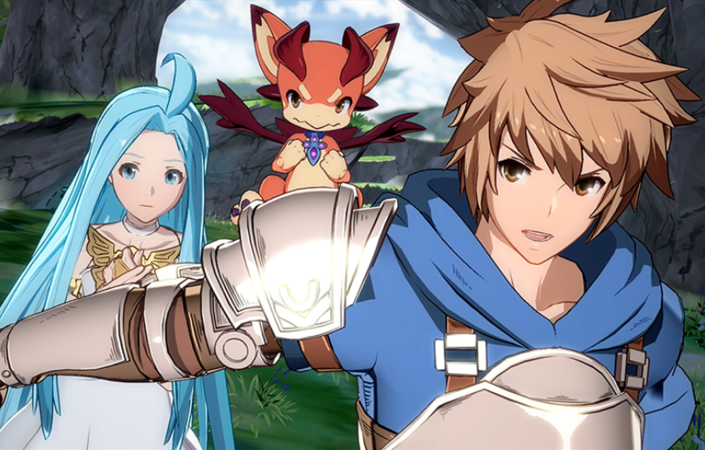

BOOM RADIO
Sasonal Events and exclusivity in Games
There isn't a lot of room for newcomers in the fighting game genre. Veteran franchises like Street Fighter, Tekken, Mortal Kombat, and Guilty Gear have dominated the space for years, so the new challengers that do choose to step into the ring usually have the backing of a popular license. Granblue Fantasy Versus is just that kind of rookie fighter; it's based on a property that's incredibly popular in Japan thanks to a successful mobile gacha (virtual capsule-toy vending machine) game with RPG hooks, but relatively unknown everywhere else. Versus is, for all intents and purposes, Granblue Fantasy's debut on the world stage. Developed by Arc System Works--known for excellent fighting game adaptations of Dragon Ball Z and Persona 4--Granblue Fantasy Versus has a strong core thanks to unorthodox gameplay mechanics that delicately balance depth with approachability, while introducing interesting new ideas of its own. The extra flourishes that serve as a nod to fans or aim to adhere to RPG roots whiff on occasion, but the experience as a whole holds its own thanks to the strength of its fundamentals. ArcSys has made strides in improving the approachability of its anime fighters more with simpler inputs and easier-to-understand systems, but for Granblue Fantasy Versus, it has moved away from the breakneck pace, air-dashing-oriented, aggressive playstyle of anime fighters to something more traditional. As a ground-based fighting game, Versus has a much slower pace of play and places heavier focus on normals and special moves instead of partner assists and lengthy touch-of-death combos. In that respect, it can be likened more closely to Capcom fighting games such as Street Fighter. The emphasis is on timing and spacing your attacks properly to create opportunities for follow-ups or set up situations where you have an advantage, but not necessarily an almost guaranteed victory. At a higher level, it's about footsies, precisely executed mixups, smart use of the universal overhead, and the occasional frame trap. For newcomers--of which there's likely to be many, given the popularity of Granblue Fantasy--it's much more stable ground to find footing. Fighting game veterans will naturally have an advantage, but for everyone else, the mountain doesn't seem as steep to climb, so the idea of walking the path to mastery is much more inviting.
My Dislexic Journey in Scotland
Steve Thomas McCue
My Dislexic Journey in Scotland
Steve Thomas McCue
My Dislexic Journey in Scotland
Steve Thomas McCue